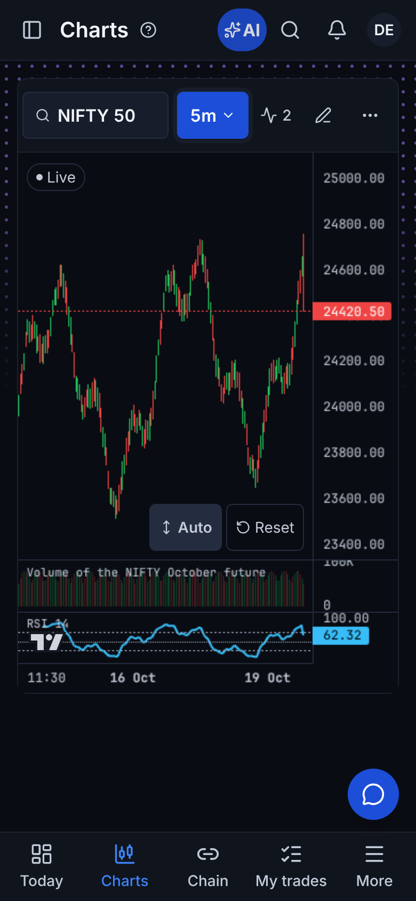
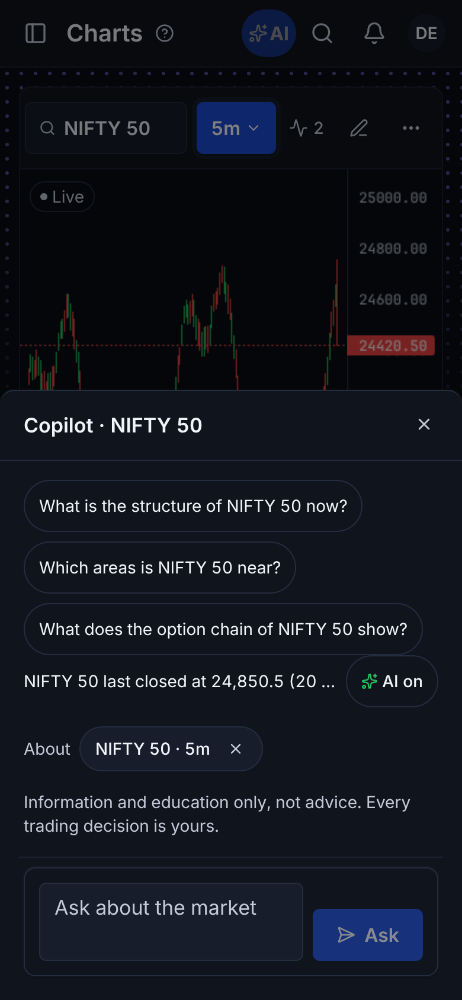
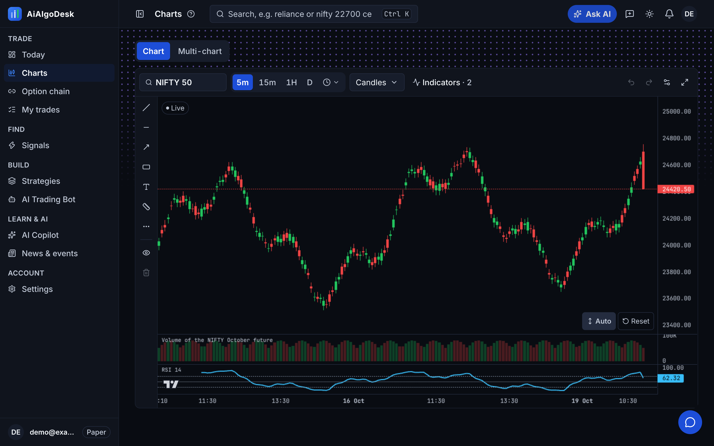
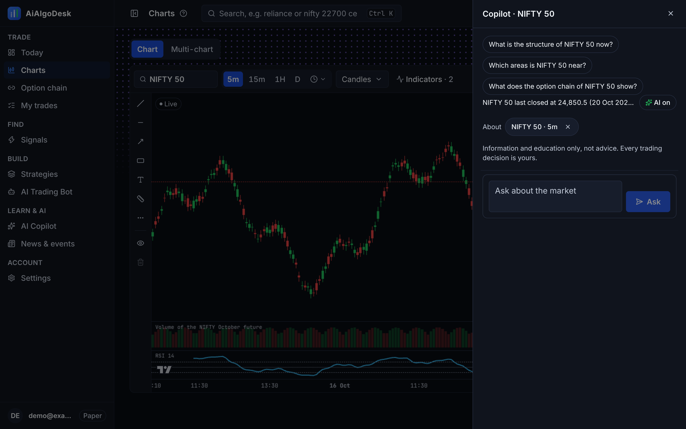
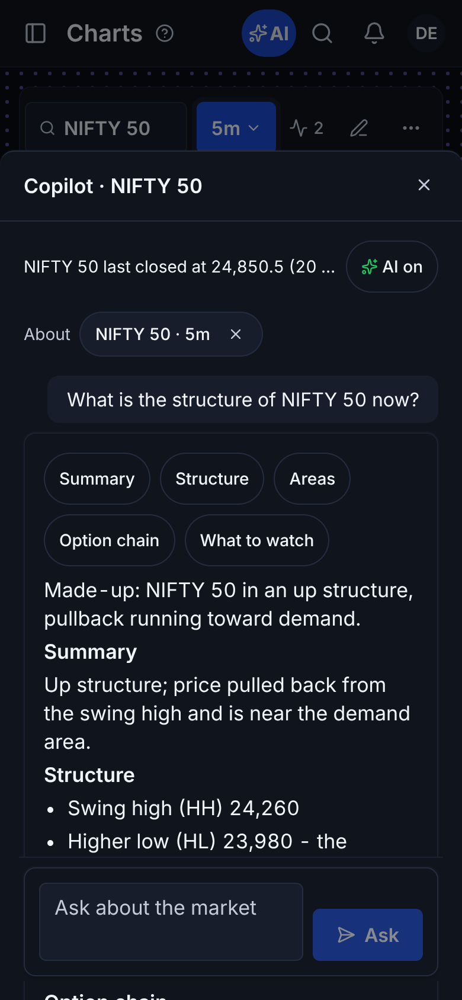
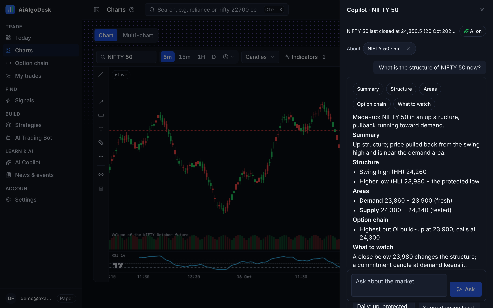

Owner 5 Nov "Default yes". Before: the chat only on Copilot > Ask. After: a round button on every page opens the same chat with the page's symbol and three ready questions. Mocked made-up data (the market strip's prices are not mocked).




The bubble's chat shows only the conversation and the ask box (no numbers strip, job buttons or Advanced); an answer written in sections opens with its index (tap to jump), each section has its heading, and Copy copies the whole answer with its disclaimer.


Settings > AI: "The Copilot answers in" adds "Same as my question" (default); "The Copilot writes like": Market analyst (default) / Simple words.